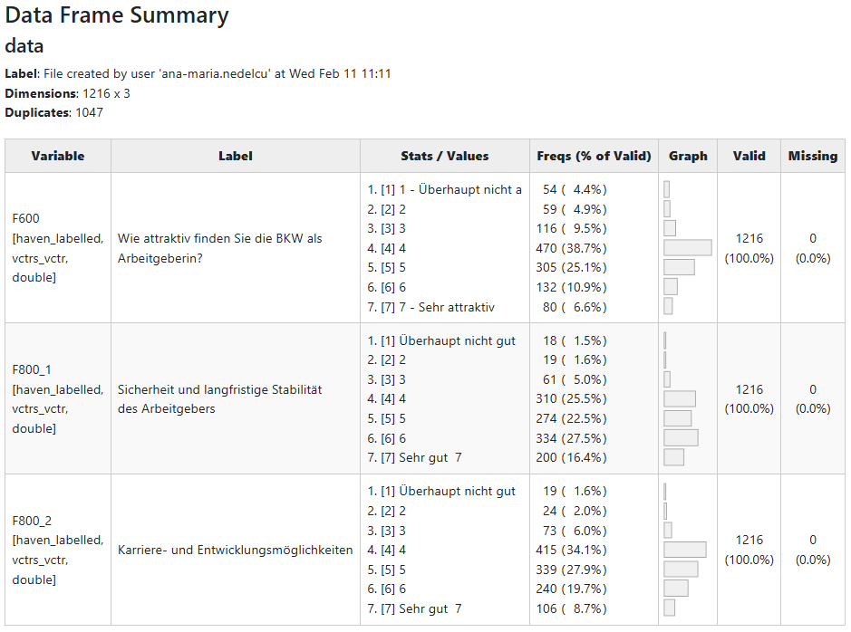
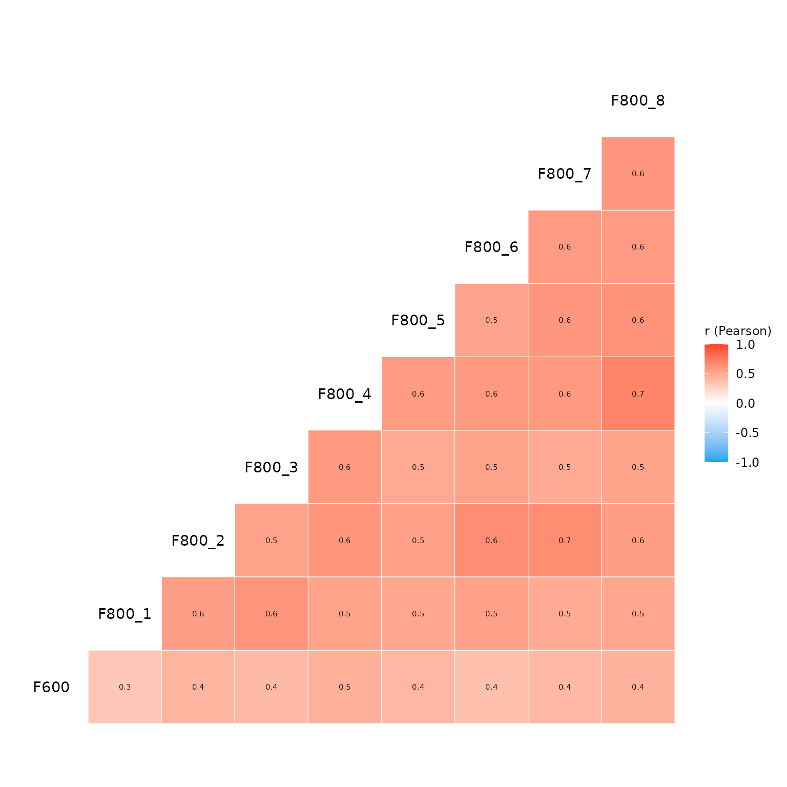
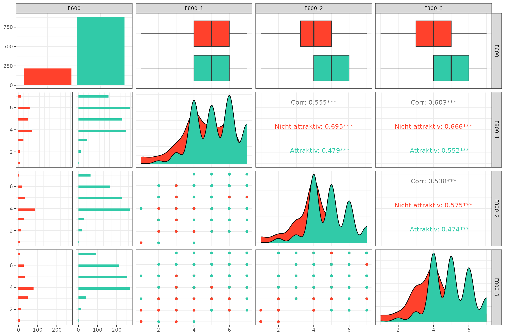

library(YouAnalyser)
#>
#> ── Welcome to YouAnalyser! ─────────────────────────────────────────────────────
#> ✔ Package loaded successfully!
#> Type `?YouAnalyser` to see the documentation.
#> Visit the package's website for more information:
#> <https://eguizarrosales.github.io/YouAnalyser/>
library(haven)1. Overview and Descriptive Statistics
The eda_summary() function provides a comprehensive
overview of your data:
- It generates a data frame summary that displays for each variable the variable label, value labels, frquencies by values, a histogram, number of valid values and number of missing values.
- It also computes descriptive statistics for each variable: Mean, Standard Deviation, Range, Quartiles, Skewness, and Kurtosis.
By default, eda_summary() opens a browser window to
display the summary table and prints the descriptive statistics in the
console. You can control this behavior with the
console_output and browser_output
arguments.
# Provide summary in console only:
eda_summary(
data = bkw_processed,
variables = c("F600", "F800_1", "F800_2"), # If NULL (default), all variables are included
console_output = TRUE,
browser_output = FALSE
)
#> Warning: no DISPLAY variable so Tk is not available
#> Warning in png(png_loc <- tempfile(fileext = ".png"), width = 150 *
#> graph.magnif, : unable to open connection to X11 display ''
#> Warning in png(png_loc <- tempfile(fileext = ".png"), width = 150 *
#> graph.magnif, : unable to open connection to X11 display ''
#> Warning in png(png_loc <- tempfile(fileext = ".png"), width = 150 *
#> graph.magnif, : unable to open connection to X11 display ''
#>
#> ── Data Frame Summary
#> Data Frame Summary
#> data
#> Dimensions: 1104 x 3
#> Duplicates: 946
#>
#> --------------------------------------------------------------------------------------------------------------------------------------------------
#> Variable Label Stats / Values Freqs (% of Valid) Graph Valid Missing
#> ------------------ ----------------------------------------- ------------------------------ -------------------- ------------ ---------- ---------
#> F600 Wie attraktiv finden Sie die BKW als 1. [1] 1 - Überhaupt nicht a 42 ( 3.8%) 1104 0
#> [haven_labelled, Arbeitgeberin? 2. [2] 2 49 ( 4.4%) (100.0%) (0.0%)
#> vctrs_vctr, 3. [3] 3 127 (11.5%) II
#> double] 4. [4] 4 443 (40.1%) IIIIIIII
#> 5. [5] 5 282 (25.5%) IIIII
#> 6. [6] 6 100 ( 9.1%) I
#> 7. [7] 7 - Sehr attraktiv 61 ( 5.5%) I
#>
#> F800_1 Sicherheit und langfristige Stabilität 1. [1] Überhaupt nicht gut 11 ( 1.0%) 1104 0
#> [haven_labelled, des Arbeitgebers 2. [2] 2 21 ( 1.9%) (100.0%) (0.0%)
#> vctrs_vctr, 3. [3] 3 65 ( 5.9%) I
#> double] 4. [4] 4 295 (26.7%) IIIII
#> 5. [5] 5 256 (23.2%) IIII
#> 6. [6] 6 300 (27.2%) IIIII
#> 7. [7] Sehr gut 7 156 (14.1%) II
#>
#> F800_2 Karriere- und Entwicklungsmöglichkeiten 1. [1] Überhaupt nicht gut 11 ( 1.0%) 1104 0
#> [haven_labelled, 2. [2] 2 33 ( 3.0%) (100.0%) (0.0%)
#> vctrs_vctr, 3. [3] 3 69 ( 6.2%) I
#> double] 4. [4] 4 405 (36.7%) IIIIIII
#> 5. [5] 5 300 (27.2%) IIIII
#> 6. [6] 6 209 (18.9%) III
#> 7. [7] Sehr gut 7 77 ( 7.0%) I
#> --------------------------------------------------------------------------------------------------------------------------------------------------
#>
#> ── Descriptive Statistics
#> Variable | Mean | SD | Range | Quartiles | Skewness | Kurtosis | n | n_Missing
#> -------------------------------------------------------------------------------------------
#> F600 | 4.28 | 1.29 | [1.00, 7.00] | 4.00, 5.00 | -0.22 | 0.53 | 1104 | 0
#> F800_1 | 5.07 | 1.29 | [1.00, 7.00] | 4.00, 6.00 | -0.40 | -0.10 | 1104 | 0
#> F800_2 | 4.71 | 1.20 | [1.00, 7.00] | 4.00, 6.00 | -0.17 | 0.23 | 1104 | 0If browser_output is set to TRUE, the
summary table looks like this:

2. Variable Correlations
The eda_correlations() function computes and visualizes
the correlation matrix for a set of variables. It supports different
correlation methods (e.g., Pearson, Spearman) and provides a heatmap
visualization of the correlations.
out <- eda_correlation(
data = bkw_processed,
variables = c("F600", paste0("F800_", 1:8)), # If NULL (default), all variables are included
correlation_type = "pearson"
)
# Inspect pairwise correlations
out$d
#> # Correlation Matrix (pearson-method)
#>
#> Parameter1 | Parameter2 | r | 95% CI | t(1102) | p
#> -------------------------------------------------------------------
#> F600 | F800_1 | 0.33 | [0.27, 0.38] | 11.45 | < .001***
#> F600 | F800_2 | 0.43 | [0.38, 0.48] | 15.78 | < .001***
#> F600 | F800_3 | 0.40 | [0.35, 0.45] | 14.52 | < .001***
#> F600 | F800_4 | 0.46 | [0.41, 0.50] | 17.13 | < .001***
#> F600 | F800_5 | 0.42 | [0.37, 0.47] | 15.56 | < .001***
#> F600 | F800_6 | 0.36 | [0.31, 0.41] | 13.00 | < .001***
#> F600 | F800_7 | 0.41 | [0.36, 0.46] | 15.05 | < .001***
#> F600 | F800_8 | 0.44 | [0.39, 0.49] | 16.29 | < .001***
#> F800_1 | F800_2 | 0.56 | [0.51, 0.59] | 22.17 | < .001***
#> F800_1 | F800_3 | 0.60 | [0.56, 0.64] | 25.09 | < .001***
#> F800_1 | F800_4 | 0.53 | [0.49, 0.57] | 20.80 | < .001***
#> F800_1 | F800_5 | 0.51 | [0.47, 0.55] | 19.76 | < .001***
#> F800_1 | F800_6 | 0.54 | [0.50, 0.58] | 21.41 | < .001***
#> F800_1 | F800_7 | 0.48 | [0.44, 0.53] | 18.40 | < .001***
#> F800_1 | F800_8 | 0.52 | [0.47, 0.56] | 19.96 | < .001***
#> F800_2 | F800_3 | 0.54 | [0.49, 0.58] | 21.18 | < .001***
#> F800_2 | F800_4 | 0.60 | [0.56, 0.64] | 24.98 | < .001***
#> F800_2 | F800_5 | 0.54 | [0.50, 0.58] | 21.27 | < .001***
#> F800_2 | F800_6 | 0.65 | [0.61, 0.68] | 28.26 | < .001***
#> F800_2 | F800_7 | 0.65 | [0.61, 0.68] | 28.42 | < .001***
#> F800_2 | F800_8 | 0.56 | [0.52, 0.60] | 22.35 | < .001***
#> F800_3 | F800_4 | 0.59 | [0.55, 0.62] | 24.03 | < .001***
#> F800_3 | F800_5 | 0.50 | [0.45, 0.54] | 19.07 | < .001***
#> F800_3 | F800_6 | 0.53 | [0.49, 0.58] | 21.00 | < .001***
#> F800_3 | F800_7 | 0.48 | [0.44, 0.53] | 18.33 | < .001***
#> F800_3 | F800_8 | 0.53 | [0.49, 0.57] | 20.72 | < .001***
#> F800_4 | F800_5 | 0.57 | [0.53, 0.61] | 23.30 | < .001***
#> F800_4 | F800_6 | 0.59 | [0.55, 0.62] | 23.97 | < .001***
#> F800_4 | F800_7 | 0.58 | [0.54, 0.62] | 23.77 | < .001***
#> F800_4 | F800_8 | 0.70 | [0.67, 0.73] | 32.47 | < .001***
#> F800_5 | F800_6 | 0.53 | [0.48, 0.57] | 20.58 | < .001***
#> F800_5 | F800_7 | 0.60 | [0.56, 0.64] | 24.91 | < .001***
#> F800_5 | F800_8 | 0.62 | [0.58, 0.65] | 25.92 | < .001***
#> F800_6 | F800_7 | 0.57 | [0.53, 0.61] | 23.33 | < .001***
#> F800_6 | F800_8 | 0.57 | [0.53, 0.61] | 23.32 | < .001***
#> F800_7 | F800_8 | 0.60 | [0.56, 0.63] | 24.65 | < .001***
#>
#> p-value adjustment method: Holm (1979)
#> Observations: 1104
# Display correlation heatmap
out$p
3. Going Further
If you need more sophisticated tools for EDA, I highly recommend the
package GGally, especially the function
GGally::ggpairs(), which allows you to create a matrix of
scatterplots, histograms, and correlation coefficients for a set of
variables. This can be particularly useful for visualizing relationships
between variables in your survey data.
# Create a dummy data set with a binary outcome variable coded as factor and three binary predictors
binary_data_example <- bkw_bin_outcome |>
dplyr::select("F600", paste0("F800_", 1:3)) |>
dplyr::mutate(F600 = haven::as_factor(F600))
# Visalize pairwise relationships with ggpairs.
GGally::ggpairs(
data = binary_data_example,
mapping = ggplot2::aes(color = F600)
) +
ggplot2::scale_colour_manual(
values = c("#ff412c", "#31caa8"),
) +
ggplot2::scale_fill_manual(
values = c("#ff412c", "#31caa8"),
) +
ggplot2::theme_bw()
#> `stat_bin()` using `bins = 30`. Pick better value `binwidth`.
#> `stat_bin()` using `bins = 30`. Pick better value `binwidth`.
#> `stat_bin()` using `bins = 30`. Pick better value `binwidth`.
If you are using Positron as your IDE – which I cannot stress enough how much I recommend – you can also use the built-in Data Explorer, which provides a user-friendly interface for exploring your data, including summary statistics, visualizations, and the ability to filter and subset your data. Finally, also give the amazing Databot a try! It is an AI assistant that can help you with data analysis tasks, including EDA, and can be a great companion for your data analysis workflow.